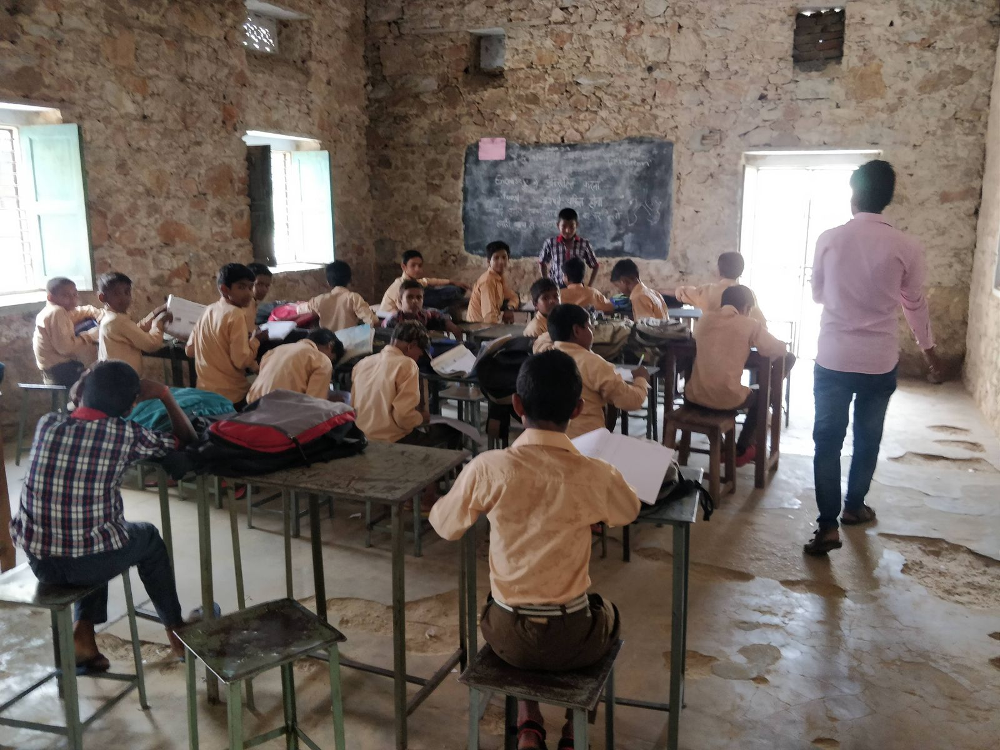

Inside a fictional education revolution
| 18 December, 2022

This story was originally published in my fortnightly deep-dive newsletter, The Interval. You can read more about it here.
2017 witnessed a governance miracle. Rajasthan, the least literate Indian state was ranked the best in the National Achievement Survey (NAS), the largest ever student assessment conducted by the government.
It was a big deal. Just two years before the exam, then Chief Minister Vasundhara Raje acknowledged the poor quality of education and announced her goal to break into the top ten.
The survey said her team delivered — and the world noticed.
The Indian Express published a two-page centre-spread story narrating the “education renaissance” in Rajasthan. “Once a laggard in education,” the report said, the state “has been working to make schools less dreary and more child-focused…The results are visible.”
India’s then school education secretary Anil Swarup was gung-ho: “Institutional reforms, innovative ideas and a commitment to improve has resulted in this qualitative change,” he tweeted when the survey results were out. “So much to learn…”
The Boston Consulting Group, the management consultancy Raje had hired to assist her bureaucracy, took it further. The state’s jump from #25 to #1, the company claimed, is proof that their big idea to fix government schools — school mergers — works: “500,000 schools need to shut down in India from a base of one million to improve education,” BCG’s social impact director said in a video posted on the company’s website.
My bullshit detector beeped when I saw these claims. Something was off and I looked more closely.

There is one more national survey tracking student learning outcomes. It’s called ASER. The education non-profit Pratham conducts it. Many in the government hate it but they can’t ignore it. Since the mid-2000s, ASER has exposed what Pratham calls the “learning crisis” in Indian schools.
I checked ASER’s 2018 data. It told a different story. Forget transformation: the state’s performance fell down compared to the previous 2016 round. Rajasthan was still among India’s worst states.
In short, Rajasthan was both the best and the worst Indian state in terms of learning outcomes, depending on the data you choose.
This was puzzling. How can two large-scale nationally-representative surveys paint contrary pictures of the same state?
I made phone calls and got a simplistic answer: “the methodology is different and you can’t compare the two surveys.” I was not convinced. I already knew that. NAS and ASER measure different things in different ways (more here). But common sense said there was more to the story. I wanted to know what really happened in Rajasthan.
So I started reporting. I visited government schools in rural Jaipur to interview teachers, met government officials and partner consultants, reviewed data and government documents and pieced together an answer I can live with.
I won’t hold the suspense. My reporting suggests that NAS data is junk. It’s garbage. If the data is the lens to assess performance, no radical transformation happened in Rajasthan.
This fictional transformation illustrates the underlying structure of a society-wide problem: metrics-fixation and the urge to quantify everything. Historian Jerry Muller calls it the tyranny of metrics.
Measurement is not the problem, Muller says. Excessive measurement and inappropriate measurement is. Unbounded metrics-fixation leads to unintended negative consequences and corrupts the institutions it was meant to improve. It shapes how we talk and think about the world.
This problem, Muller says, is spread across disciplines: schools, medical care, businesses, and government. Solving the Rajasthan paradox helped me understand it better. Let me show you how.
I. The official narrative
I always try to understand how the people I write about think about their work and look at the problem from their eyes. It helps to sketch the world around questions I am trying to answer.
So I called the man credited for the Rajasthan transformation: Naresh Pal Gangwar, the state’s then education secretary.
“School education is a huge ecosystem,” he told me. “90 lakh kids. 40,000 villages. There were problems with the basic schooling structure. Structural changes were required to reform the system.”
Structural change is jargon and it appeared again and again in my interviews with philanthropists, consultants and another state education secretary.
The argument goes like this: Education policy is failing kids because gaps exist on the administrative side. Management deficit is big. The number of schools has increased. Student enrollment has increased. But the managerial capacity to handle the new load has not. So good projects start and they fail. This is the ignored aspect of education reform, they say. Fixing it will yield long-term returns.
So that’s what Rajasthan did. Gangwar gave me a list. Small schools were merged to function as one big model school. Teacher vacancies were reduced from over 50% to 15%. Block officers were trained to build mid-management capacity. Shala Darpan, an online dashboard, was launched to track student-level data and improve information flows. And so on.
In short, the state focused on delivery structures, governance, transparency and accountability. The process of fixing these gaps, Gangwar said, led to the ranking jump. There were other indicators too, he said: “A reverse migration began. Students were leaving private schools to join government schools.”
That is the official narrative.
Now look, my understanding of India’s education scene is not much different from Elon Musk’s understanding of journalism: I don’t know enough to grasp its complexity. So I could not critically assess Gangwar’s reasoning.

I compensated for my ignorance with common sense and made one assumption: Learning outcomes could not have improved if nothing changed inside the classroom. Teachers had to be doing something different. Sounds right?
Now it’s possible that administration efficiency improved classroom learning. Teachers could have had more time to teach. Reduced vacancies could have improved the teacher-student ratio. Data tracking could have exposed inefficiencies and eased decision making.
So I booked a ticket for Jaipur and rode a bus for three days to visit government schools and find out what changed. And things did in fact change — just not in the way the administration wanted it to.
II. Schools and dashboards

Teachers at the first two schools shot me puzzled looks when I asked about NAS. They were not aware of the rankings which brought me to their school. Oops.
So I stopped mentioning NAS and enquired what had changed over the last few years. Some pointed to a newly constructed building and some showed me wall paintings. Some mentioned new donation initiatives and others highlighted school mergers. (None of the teachers I met wanted to be identified. So I won’t disclose their names.)
But I mostly heard complaints, the same complaints teachers have told researchers for years, and the most prominent one is also the one that got worse: teachers were not finding enough time to teach. Surveys, election duties and block-level work ate up their time.
The new culprit was the dashboard the government was so proud of. Here are three stories.
One: Unnecessary data
“Our school has 140 students. Officials sent doses for kids and gave us two days to administer. We would do that, we always do that. But now they want data. They asked us to report every single detail on the dashboard like how many students took the medicine on the first day and how many on the second day and who got ill and more. Why could they not trust us to do our job? And even after entering the data, they called us in ten days to ask for the same information. So what is the point? It just wastes my time.”
Two: Fake data
“All that officials want are numbers on the dashboard. So I give them that. For example, they asked us to organise fortnightly community events. Students would show talent with parents in the audience. Good idea. It could boost their confidence. But if parents don’t come, we are scolded. What can I do? So I just say 20 parents turned up and officials are happy to see that on the dashboard. Job done.”
Three:Ghost students
“Officials gave us instructions to stop dropouts and increase school enrolment. We try. But if students drop out, we are blamed and we are asked to get them back. How do we do that? So now, we don’t remove dropouts from the dashboard. Just this morning, two parents came to say their enrolled kids won’t join. But I didn’t strike off their names. Why should I tell the truth?”
Now I don’t know if these were isolated incidents or systemically spread across the system. I am not claiming all the data is fake.
But the anecdotes revealed a pattern: the government’s obsession with quantification to fix administrative issues created incentives that led to unintended consequences. They were not listening to the teachers and kicking self-goals.
There was one principal who was happy with the dashboard because it eased the promotion process and scholarship disbursement. But he was an exception. Most teachers felt duped to play data-entry operator: the system that was meant to reduce their workload increased it.
Two teachers told me about Gangwar’s administration style. The happy principal was one, who fully supported whatever he did: “If the government asks you to increase enrollment in schools by 10%, then you have to get it done. If targets were not achieved, Gangwar sent notices to teachers and officials. He could even transfer you.”
Gangwar won brownie points with teachers who loved his carrot-and-stick approach. But he was making the well-documented mistake: linking reward and punishment with performance invites gaming of metrics. It skews incentives.
Something similar happened with NAS.
III. The letter trail
NAS is a survey. NCERT selects the schools using a statistical methodology to avoid bias. Around 170 schools in each of India’s 700 districts were sampled. They were informed months in advance about their selection.
The government says NAS is conducted (it’s an ongoing survey; the 2021 round happened last month) to diagnose problems and guide education policy, planning and implementation.
So when a school principal told me he was called for a NAS training session, it made no sense. “What would they be trained for?” I wondered. This principal spoke in a matter-of-fact tone and did not offer much details or insight.
But he had given me a lead to explore more. I looked for government documents mentioning “NAS training” which led me to a series of revealing letters.
On 19 June 2017, five months before the exam, education secretary Gangwar informed state officials about NAS. He told them its results will feed in state education rankings. So officials should start preparing. Rajasthan’s learning levels should be better than others, he wrote.
The letter ended with a warning: “Do remember that disciplinary action will be taken against district education officers whose district’s learning levels fall below the average”. Wow.

Letter dated June 19, 2017. Link to the full letter.
Here again, the same mistake: punishment was linked with performance metrics.
“The puzzle is now half-solved,” I told myself at the first glance of this letter.
But there was more.
One letter mentions a two-day NAS training for school principals, confirming what I had picked up in my reporting. Sample papers were created. Hard copies were shared with principals of schools selected for NAS. All of this is mentioned in the letters.
In September, officials were concerned that the upcoming Dussehra holiday would affect NAS results. “So effective preparation should be done through additional classes and coaching,” the letter said.
On October 5, five weeks before the exam, officials were asked to assign “holiday homework” during the Diwali break for NAS preparation.

Letter dated October 5, 2017. Link to the full letter.
The letters made it clear: state officials were preparing kids for a competitive exam—not a diagnostic exam. They wanted to win and shine in the rankings.
The state’s effort was directed away from its core purpose — education — to hitting a metric target. Critics of standardized testing call it “teaching to the test”, a practice where the education system narrowly focuses on the test and not the general curriculum.
There is no sign where officials signalled the exam will help diagnose problems. (And teachers I interviewed did not receive any feedback from NAS.)
You can imagine what this would have led to.

But one question still remained: what exactly happened on the day of the exam?
You can guess my hypothesis: just like teachers entered fake data in the Shala Darpan dashboard to hit performance metrics, cheating would have happened on exam day to avoid punishment.
But I wanted proof. Something that confirms my theory. I tried finding NAS invigilators. I could not. I found a list of schools where NAS was conducted and landed at two of them. Teachers didn’t say much. In one school, I was sent to a classroom where students had appeared for NAS and asked them to describe what they remember of the day. I did some really terrible reporting. No one told me anything. Kids just laughed at me.
I was so frustrated at my inability to crack this last bit and looked online to read what the local press had reported. I was assuming they would have simply carried the government’s version. I could not be more wrong.
IV: Exam day
On the morning of November 13, 2017, journalist Devendra Singh was running around schools in the state’s Nagaur district to report a story for his then-employer, Rajasthan Patrika. It was the day of the NAS exam.
What Singh saw could not be called an exam. Teachers and students sat together. Students who could not read the question paper had marked the right answers. The same kids could not answer the same questions after the exam.
Singh published his eye-witness account in the next day’s paper: “NAS became a joke,” he wrote. I called up Singh to confirm, just to be sure. “Yes, it was a complete sham. NAS ranking has no meaning. It is totally bogus,” Singh told me.
My confidence in Singh’s account strengthened when I read another report in Patrika from Dausa district with similar observations: “Students were helped to improve the ranking of the school and make the district look better. There was no secrecy.”
Singh asked teachers why they were doing this.
You know why.
“Why should our school result be down? We will be penalised for students’ poor performance,” Singh recalled one teacher telling him.
I remember thinking at the time: “How unfortunate. The government conducted this big exercise — the largest ever student assessment survey — to manufacture junk? What a waste of public resources!”
V. “Yeah, we know!”
I had my answer. But I wanted to be sure and asked people who should, in theory, defend NAS.
District officer: A district project coordinator agreed to speak if I don’t use his name. I told him what I found. Was he surprised? Would he contest my findings?
He didn’t.
“Gaps remained in the monitoring system,” he acknowledged. “People sent for monitoring didn’t do their jobs properly.”
“Teachers may have supported students. They thought poor student performance will lead to penalties. I specifically told them this was a survey to assess the learning levels of kids and results will help send suggestions to the central government. But they ignored this part and thought it was just sweet talk,” he said.
I interrupted and mentioned Gangwar’s letters: “That’s exactly the problem. One such circular went viral on social media and teachers were left concerned.”
Central Square Foundation employee: Then I took what I found to a source in the Delhi-based Central Square Foundation. They partnered with NCERT to conduct NAS 2017. I was hoping he would defend it.
He didn’t.
“It is junk. Entire government machinery knows that NAS is junk,” he said, a claim I obviously can’t verify.
The problem was the government had made NAS so high stakes, he said. “People were flown to Arunachal Pradesh to conduct the test. NAS used to happen on a small scale. But they increased the sample and it was huge. Some states didn’t even realise its importance. Now they do.”
It can get worse as NITI Aayog is using it to rank states, he said. “Chief Ministers now want to know how states are preparing for NAS. There are ongoing discussions to tie education budgets with NAS ranking,” he said, concerned about how poor quality data is informing policy decisions.
“Data is good as long as it is supportive. When it starts dictating, it loses its purpose.”
VI. What does this mean?
You can blame Gangwar and consultants for this whole mess. You can say things could have been different with a different bureaucrat. Maybe. But I am not sure.
He did what he thought the state needed: administrative reforms. And he did what his Chief Minister asked him to do: get high up in rankings. He did not give orders for state-wide cheating.
Gangwar was part of the system obsessed with data and metrics. That system imposed incentives — from the Chief Minister at the top of the hierarchy to the teacher at the bottom — that did not align with the goal of education. That system is the problem.
Few folks I shared this story with said the solution is more and better data. “What we need is an improved version of NAS,” one consultant said. “And NAS is on the right path. Its flaws will be fixed with time.”
This is a dominant view. Students assessments are only growing. Private testing companies are emerging. They are building tech so that every single student can be regularly tested.
I love data and I am all for quantification. But reporting this story and looking at the system made me question: are we missing the root cause of the problem? Is more data really the solution? Is it possible to isolate this metrics-focused system from the perverse incentives it creates?
Are we being blinded by metrics?
I don’t know. I am thinking about it.
While reporting this story, many people said I must speak to Krishna Kumar, a former director of NCERT and a critic of standardised testing, including ASER and Pratham. He opposes the outcome-driven approach.
“This is a polarised dialogue,” he said. “There is no communication happening across the table between people who believe that outcomes-driven is the way forward and those who don’t see outcomes as the real concern for education. In this polarity, we are missing where we were heading before and are heading now.”
And he explained his concern with an example. A few years ago, the Haryana Government organised an education conference at the Jindal Global University.
What he starkly remembers are the concluding statements of his co-panellist, Haryana’s then education secretary. “I am sorry to share with you this fact,” Kumar recalls the secretary as saying, “that today 90% of the upper-caste of Haryana are in private schools and 90% of lower-caste children are in government schools. This degree of social polarisation is very dangerous for learning any kind of social values.”
Kumar, the educationist, finds this worrying. “When you isolate skills, competency and outcomes from children’s social background, you are creating a discourse sharply devoid of any context of education. The secretary was pointing this out precisely. What kind of society are we creating?” he said.
“Soon after, the terrible riots of Rohtak took place, and I was reminded of his statement at that time. Haryana is really running two societies and two systems of schools.”
The concerns of Kumar are not captured by any numbers. That is not a metric anyone is looking at.